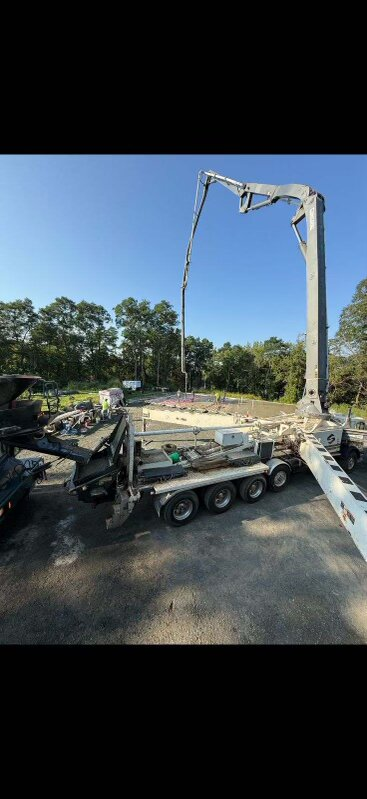
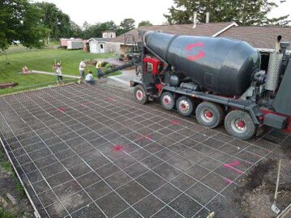
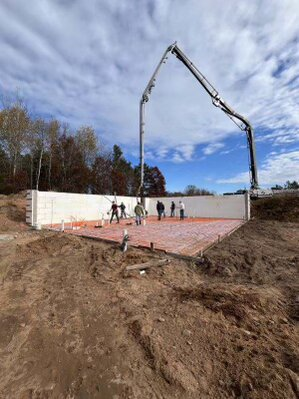
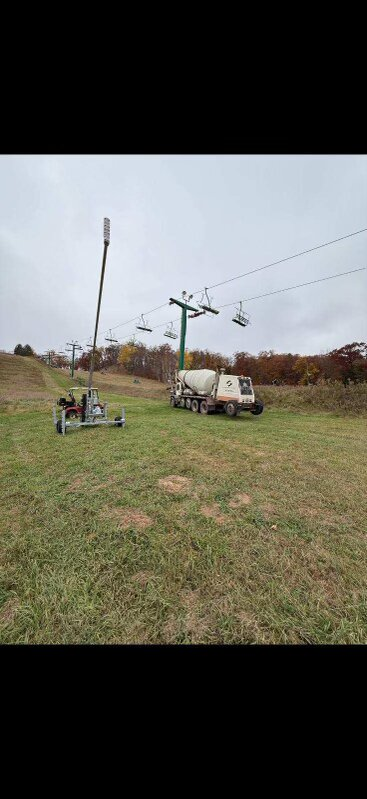

Centuria, Wisconsin
Concrete delivered to your site. Driveways, foundations, slabs, patios, ag buildings, commercial. Custom mixes.
Boom pump and line pump. Basements, second floors, over obstacles, tight spots, big pours. We reach where trucks can't.
Crushed rock, gravel, sand, fill, road base. Construction, landscaping, driveways. Delivered.
Lime spreading for farms. Improve soil pH, boost yields. We spread it for you.

Shop Slab — Polk County
Foundation Pour — Barron County
We Go Where Others Can't"Barry showed up when he said he would. Poured my shop floor in one morning. No BS."
— Mike T., Rice Lake
"Called at 7 AM needing concrete that afternoon. They made it happen. Saved my job."
— Dan K., Contractor, Cumberland
"Pump truck reached over my septic and into the basement. Fair price, great crew."
— Steve M., Frederic
45 miles from Centuria. Wisconsin and Minnesota.
Centuria, St. Croix Falls, Amery, Balsam Lake, Luck, Frederic, Milltown, Osceola, Clear Lake
Rice Lake, Barron, Cumberland, Turtle Lake, Cameron, Chetek, Almena, Dallas
Siren, Webster, Grantsburg, Danbury, Hertel, Trade Lake
Spooner, Shell Lake, Birchwood, Minong, New Richmond, Hudson area
Lindstrom, Chisago City, Center City, Taylors Falls, Shafer, North Branch
Forest Lake, Scandia, Marine on St. Croix, Stillwater area
Pine City, Rock Creek, Hinckley, Sandstone
Not sure if we reach you? Call and ask.
45 miles from Centuria, WI. That covers most of Polk, Barron, Burnett, Washburn, and St. Croix counties in Wisconsin, plus Chisago, Washington, and Pine counties in Minnesota.
Yes. Call by 10 AM and we can usually deliver the same day. Subject to availability.
We work with all sizes — 2 yards or 200 yards. Call to discuss.
Yes. 7 AM to 2 PM. Call ahead to schedule.
Boom pump and line pump. Basements, second stories, tight access, big commercial pours.
Yes. Chisago County, Washington County, Pine County, and surrounding areas.
Barry Weness — Owner
783 1st St, Centuria, WI 54824
Mon–Fri 6AM–6PM | Sat 7AM–2PM
✓ Message sent. Barry will call you back.